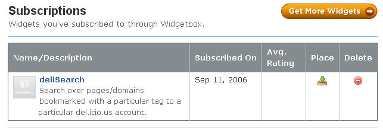
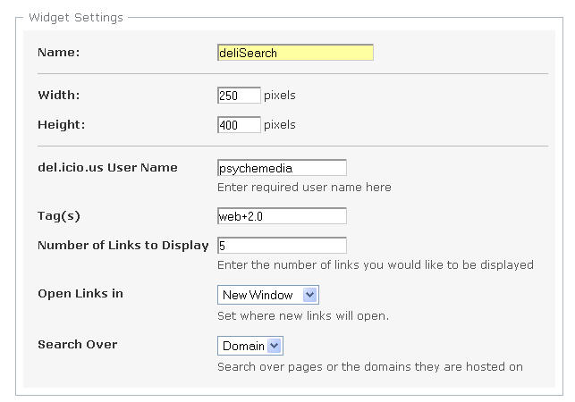
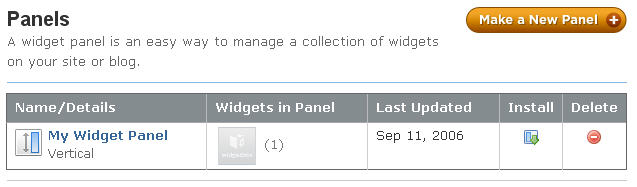
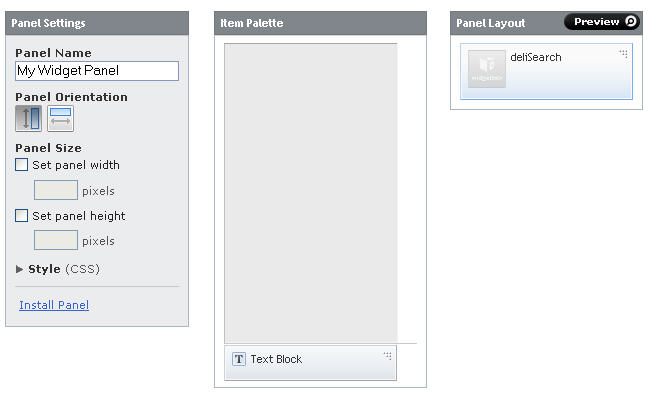

I've just been having a play with WidgetBox and now have a way of easily getting my own widgets into Moodle - for Firefox users at least - whether or nor sys admin want me to :-)
A clearinghouse for widgets, Widgetbox users subscribe to widgets from the Widgetbox gallery:

If necessary, the widget can then be configured:

As well as widget subscriptions, users can create one or more panels:

Subscribed to widgets can then be placed on the panel as required:
Adjust the panel settings to change the format of the panel. To add widgets or text blocks, drag and drop them from the Item Palette to the Panel Layout. Text blocks allow you to add small bits of plain text or HTML to your panel.

No matter how many widgets you want, there is just a single script element - defining the appropriate panel - to place in the web page you want to install the widgets on.
Rearranging the order of the widgets in the panel is simply a case of dragging and dropping them to the correct location.
And if you tire of a widget, it's easy to remove it - just drag it off the panel in your widgetbox control panel.
The single script include element also means its easy to write a Greasemonkey script (and hence Firefox extension) or cross-browser bookmarklet to inject the widgetbox panel script element into a Moodle sidebar.
At which point, all the widgets placed on that panel will appear in the Moodle sidebar.
Adding widgets like the Grazr OPML Browser to a VLE, whether via widgetbox or by adding it separately, also provides the user with control over the feeds they can view in the environment if: a) they are able to configure the OPML feed consumed by the Grazr widget, and b) they are able to determine the structure and contents of that feed, for example by using a 3rd party feed management tool such as Feed Collectors or OPML Workstation.
So - even if VLE customisation is locked down by the sysadmins - browser extensions will let you retake control:-)
Posted by ajh59 at September 11, 2006 10:02 PM